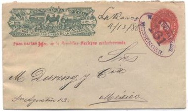
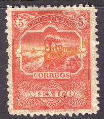

Note: on my website many of the
pictures can not be seen! They are of course present in the
catalogue;
contact me if you want to purchase it.
For stamps issued before 1884, click here.
1 c green 2 c green 2 c red (1885) 3 c green 3 c brown (1885) 4 c green 4 c red (1885) 5 c green 5 c blue (1885) 6 c green 6 c brown (1885) 10 c green 10 c orange (1885) 12 c green 12 c brown (1885) 20 c green 25 c green 25 c blue (1885) 50 c green 1 P blue 2 P blue 5 P blue 10 P blue
Most of these stamps were issued without watermark. In 1892 the 5 P and 10 P value were issued with watermark 'E.U.M.' (one letter for each stamp).
Value of the stamps |
|||
vc = very common c = common * = not so common ** = uncommon |
*** = very uncommon R = rare RR = very rare RRR = extremely rare |
||
| Value | Unused | Used | Remarks |
| 1 c | * | * | Also issued in light green (1885) Error: 1 c blue: RRR |
| 2 c green | ** | * | |
| 2 c red | *** | * | |
| 3 c green | *** | ** | |
| 3 c brown | *** | * | |
| 4 c green | ** | * | |
| 4 c red | *** | *** | |
| 5 c green | *** | * | |
| 5 c blue | *** | * | |
| 6 c green | *** | * | |
| 6 c brown | *** | ** | |
| 10 c green | *** | * | |
| 10 c orange | *** | * | |
| 12 c green | *** | ** | |
| 12 c brown | *** | ** | |
| 20 c green | *** | * | |
| 25 c green | RR | *** | |
| 25 c blue | R | *** | |
| 50 c green | * | * | |
| 1 P | * | * | |
| 2 P | * | * | |
| 5 P | RR | RR | |
| 10 P | RRR | RR | |
The values 50 c, 1 P and 2 P seem to exist cancelled to order (if I'm well informed with the same cancels as shown behind the 1886 issue).
Similar stamps exist with Hidalgo in an ellipse and inscription 'CORRESPONDENCIA OFICIAL', they are official stamps (no value indicated).

(-) red (-) brown (-) orange (-) green
Value of the stamps |
|||
vc = very common c = common * = not so common ** = uncommon |
*** = very uncommon R = rare RR = very rare RRR = extremely rare |
||
| Value | Unused | Used | Remarks |
| red | * | * | |
| brown | * | * | |
| orange | ** | * | |
| green | * | * | |


1 c green 2 c red 3 c lilac 3 c red 4 c lilac 4 c red 5 c blue 6 c lilac 6 c red 10 c lilac 10 c red 12 c lilac 12 c red 20 c lilac 20 c red 25 c lilac 25 c red 5 P red 10 P red
Most stamps are perforated 12, some exist with perforation 6, 6x12 or 12x6. In 1891 the watermark 'E.U.M' was introduced on these stamps (one letter for each stamp). A non-official overprint 'Vale 1 Cvo' seems to exist, I have never seen it.
Value of the stamps |
|||
vc = very common c = common * = not so common ** = uncommon |
*** = very uncommon R = rare RR = very rare RRR = extremely rare |
||
| Value | Unused | Used | Remarks |
| 1 c | c | c | Exists with watermark 'E.U.M'. |
| 2 c | * | * | Exists with watermark 'E.U.M'. |
| 3 c lilac | *** | * | |
| 3 c red | c | c | Exists with watermark 'E.U.M'. |
| 4 c lilac | *** | ** | |
| 4 c red | ** | * | Exists with watermark 'E.U.M'. |
| 5 c | * | c | Exists with watermark 'E.U.M'. |
| 6 c lilac | ** | ** | |
| 6 c red | ** | * | Exists with watermark 'E.U.M'. |
| 10 c lilac | ** | * | |
| 10 c red | c | c | Exists with watermark 'E.U.M'. |
| 12 c lilac | *** | *** | |
| 12 c red | *** | *** | Only exists with watermark 'E.U.M'. |
| 20 c lilac | R | R | Exists with watermark 'E.U.M'. |
| 20 c red | R | * | Exists with watermark 'E.U.M'. |
| 25 c lilac | R | *** | |
| 25 c red | * | * | Exists with watermark 'E.U.M'. |
| 5 P | RRR | RRR | Only exists with watermark 'E.U.M'. |
| 10 P | RRR | RRR | Only exists with watermark 'E.U.M'. |
Some of these stamps exist cancelled to order. If I'm well
informed the following cancels were used:
'MEXICO DF DIC - 994 10 AM' in a circle
'FRANCO EN ZIRACUARETIRO MICHOACAN' in an ellipse
'OFNA DE CORREOS EN BARRANCA DEL ORO TAMAULIPAS' in an ellipse
'OFNA DE CORREOS EN ECATZINGO E. DE MEXICO' in an ellipse.
I have not yet been able to obtain pictures of such stamps.
Postal stationery in the same design, 'WELLS FARGO & CO' and 'HIDALGO EXPRESS':



1 c green 2 c red 3 c brown 4 c orange 5 c blue 10 c red 12 c brown 15 c blue 20 c brown 50 c lilac 1 P brown 5 P red 10 P blue
These stamps exist with watermark 'E.U.M' (one letter for each stamp, 1895), watermark 'RM in fancy letters (1896), watermark 'RM eagle' (1897) or no watermark at all (1898). Most stamps have perforation 12, but perforations 6 or 6 x 12 are known to exist.
Value of the stamps |
|||
vc = very common c = common * = not so common ** = uncommon |
*** = very uncommon R = rare RR = very rare RRR = extremely rare |
||
| Value | Unused | Used | Remarks |
| Cheapest types | |||
| 1 c | * | c | Design as 3 c |
| 2 c | * | * | Design as 3 c |
| 3 c | * | * | |
| 4 c | ** | * | |
| 5 c | * | c | |
| 10 c | ** | c | Design as 15 c |
| 12 c | *** | *** | Design as 4 c |
| 15 c | *** | ** | |
| 20 c | *** | * | Design as 15 c |
| 50 c | *** | *** | Design as 15 c |
| 1 P | R | *** | |
| 5 P | RR | RR | Design as 1 P |
| 10 P | RR | RR | Design as 1 P |
These stamps exist with overprint 'OFICIAL' to be used as official stamps, example:
The overprint is in black. Stamps with red 'OFICIAL' overprints are non-issued stamps:

(Non issued red 'OFICIAL' overprint)
I've seen postal stationary of the 2 c red design ("TARJETA POSTAL").
Forgeries:
Sperati made a forgery of the 10 P stamp. He used a low value stamp, removed the image and printed the 10 P design on it. In this way, the paper and perforation are genuine! The impression of this forgery does not seem to be the same as in the genuine (the genuine stamp is engraved). There is a small dot above the first 'R' of 'CORREOS' and there are two small dots below this letter.
(Sperati forgery of the 10 P stamp)